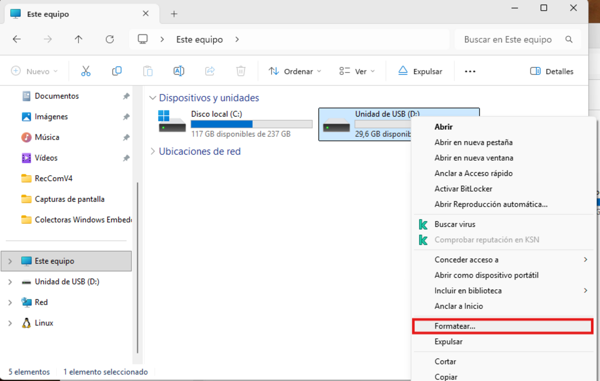
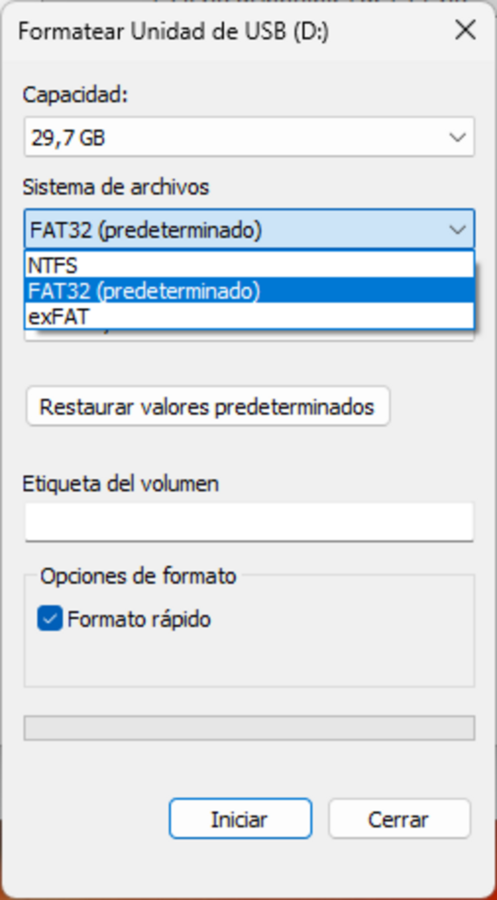
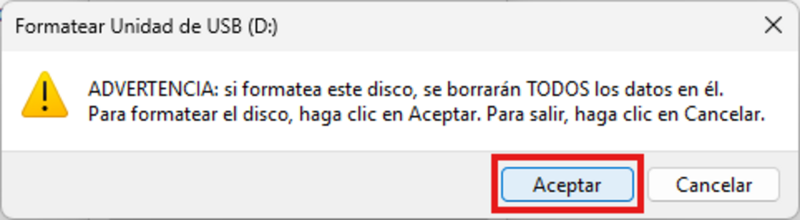
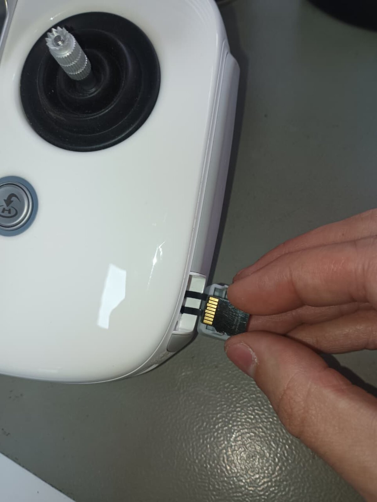
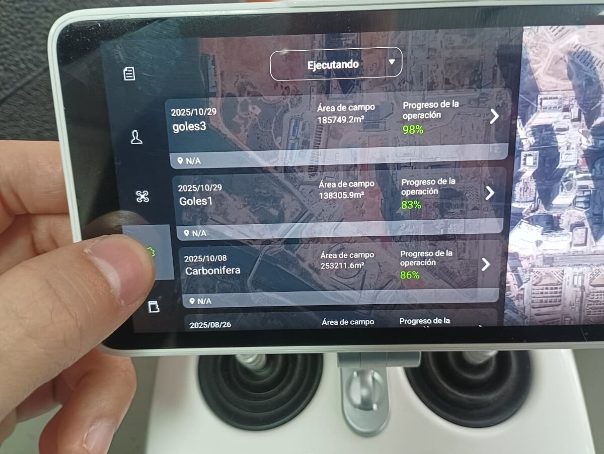
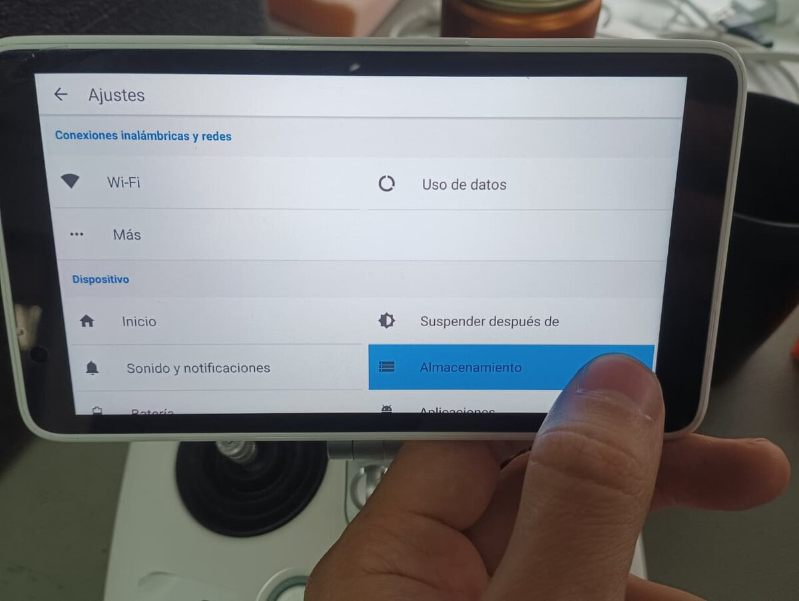
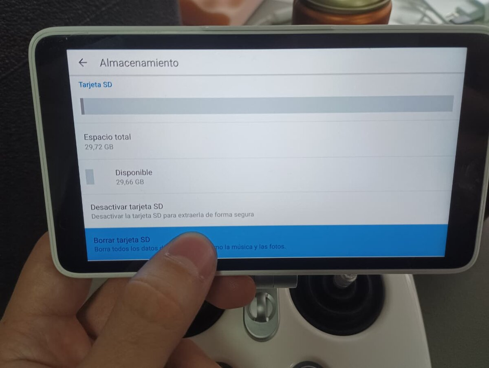
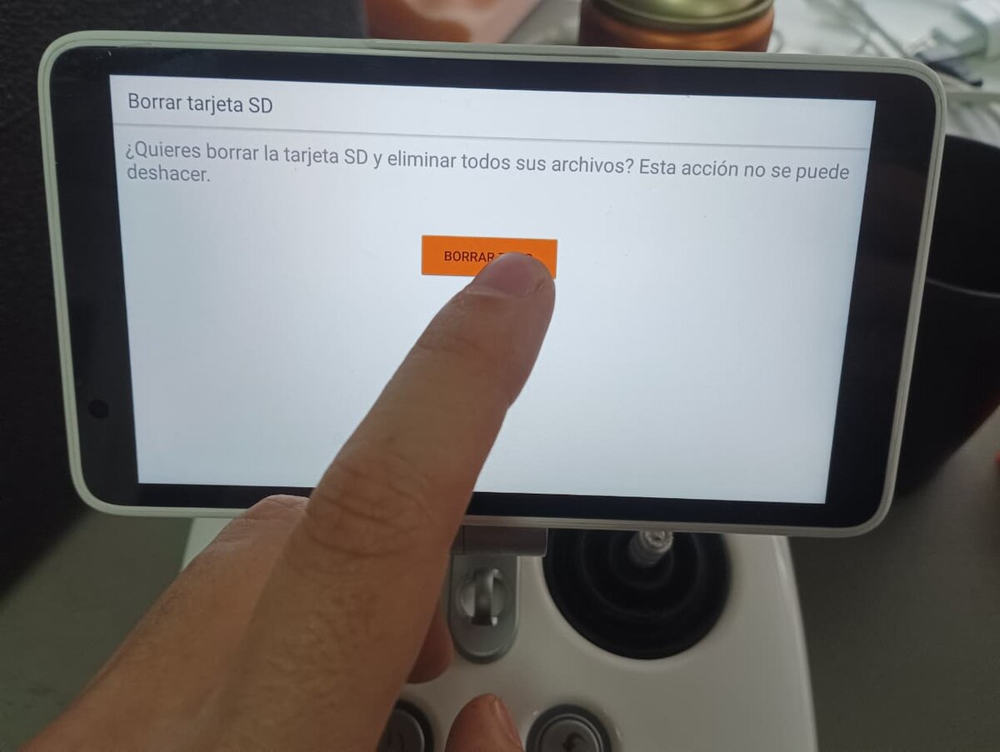
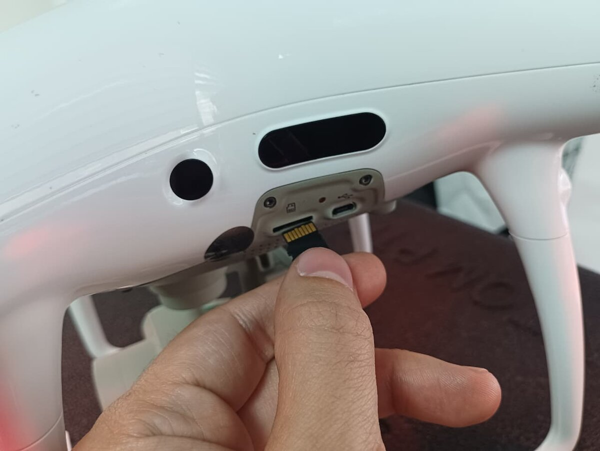
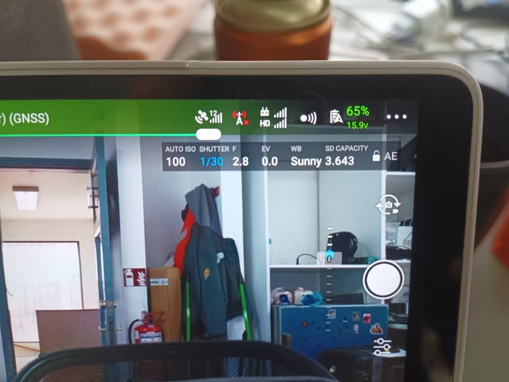

Formateo de tarjeta Micro SD para Phantom 4 RTK¶
Capacidad máxima soportada
Para utilizar una tarjeta Micro SD con el Phantom 4 RTK, se debe considerar un almacenamiento máximo absoluto de 128 GB.
Pasos para formatear tarjeta Micro SD para Phantom 4 RTK¶
1. Insertar tarjeta Micro SD en computadora¶
Insertar la tarjeta Micro SD en la computadora utilizando un lector compatible.
2. Abrir menú de formato¶
Una vez insertada la tarjeta Micro SD:
- Hacer clic derecho sobre la unidad
- Seleccionar la opción "Formatear..."

3. Seleccionar sistema de archivos¶
En la ventana de formato:
- Seleccionar: Sistema de archivos:
FAT32 - Ingresar cualquier nombre en: Etiqueta del volumen
- Mantener activada la opción: Formato rápido
Luego presionar "Iniciar"

4. Confirmar advertencia¶
Cuando aparezca la ventana de advertencia, presionar:
- Aceptar

5. Esperar finalización¶
Esto completará el proceso de formato en PC.
Compatibilizar Micro SD con Phantom 4 RTK¶
6. Insertar Micro SD en control RC¶
Insertar la tarjeta Micro SD en el slot del control RC del Phantom 4 RTK.
El slot se encuentra ubicado en el lado inferior derecho del control.

7. Abrir menú principal del control RC¶
Con el control RC encendido:
- Presionar las tres barras paralelas ubicadas en la esquina superior izquierda.
8. Abrir configuraciones¶
Presionar el botón de configuraciones (símbolo de tuerca).

9. Abrir almacenamiento¶
Dentro del menú de configuraciones:
- Bajar hasta la sección "Dispositivo"
- Seleccionar "Almacenamiento"

10. Borrar tarjeta SD¶
Dentro de la sección "Tarjeta SD":
- Presionar "Borrar tarjeta SD"

11. Confirmar eliminación¶
El sistema solicitará confirmación:
- Presionar: BORRAR TARJETA SD
- Confirmar nuevamente con: BORRAR TODO

12. Esperar finalización del proceso¶
Esto iniciará el proceso de formateo compatible con el Phantom 4 RTK.
Esperar a que el proceso termine completamente.
13. Insertar Micro SD en dron¶
Una vez finalizado el proceso:
- Retirar la tarjeta Micro SD del control RC
- Insertarla en el dron Phantom 4 RTK

Verificación de funcionamiento¶
Ingresar a la vista de cámara del dron en DJI Pilot.
En el menú desplegable ubicado en la esquina superior derecha:
- El apartado "SD Capacity" debería mostrar:
- cantidad estimada de fotografías disponibles
No deberían aparecer mensajes como:
Unknown Micro SD Error
